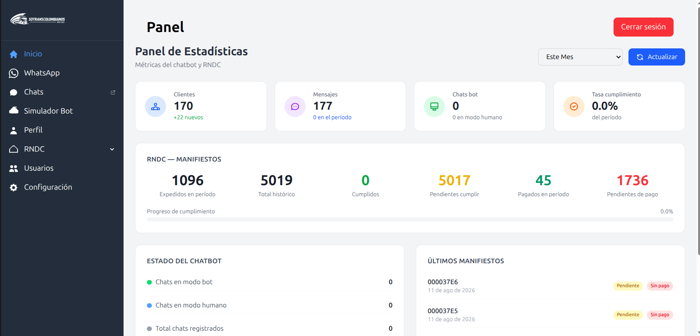
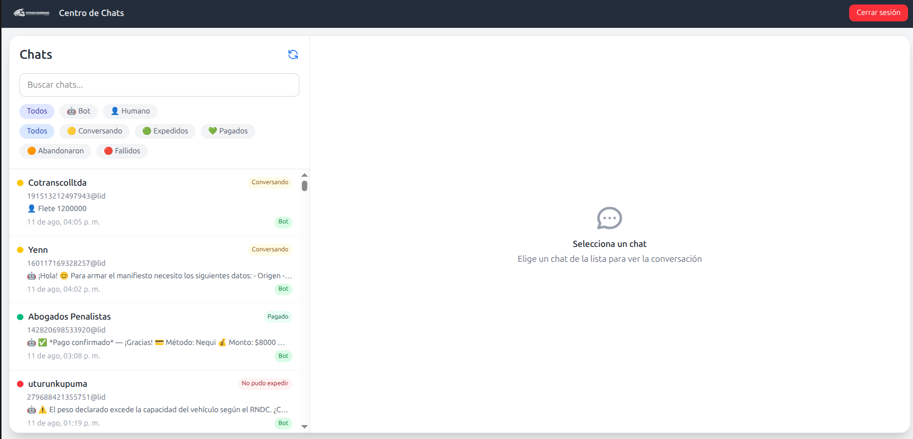
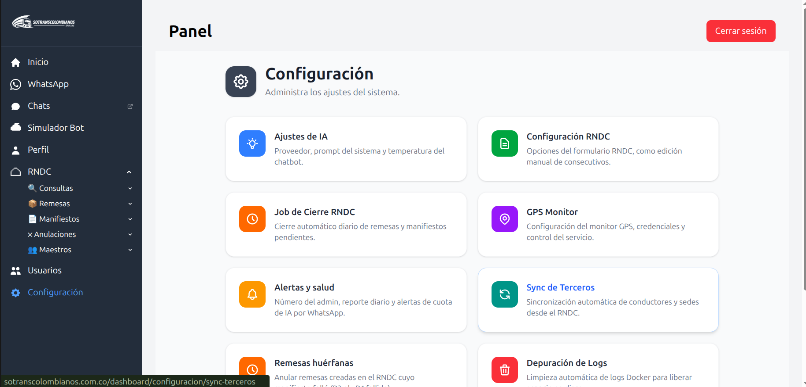

Docubot
AI Agent · Transport Sector
Agente IA · Sector Transporte
Modular AI chatbot ecosystem that automates legal document processing for Colombia's transport sector via WhatsApp. Integrates directly with the Ministry of Transport's systems to issue official documents on behalf of users.
Ecosistema de chatbot IA modular que automatiza la expedición de documentos legales para el sector transporte de Colombia vía WhatsApp. Se integra directamente con los sistemas del Ministerio de Transporte.
GO/GIN · VUE 3 · TYPESCRIPT · RASA NLP · NODE.JS · PLAYWRIGHT · POSTGRESQL · MONGODB · DOCKER · AWS EC2